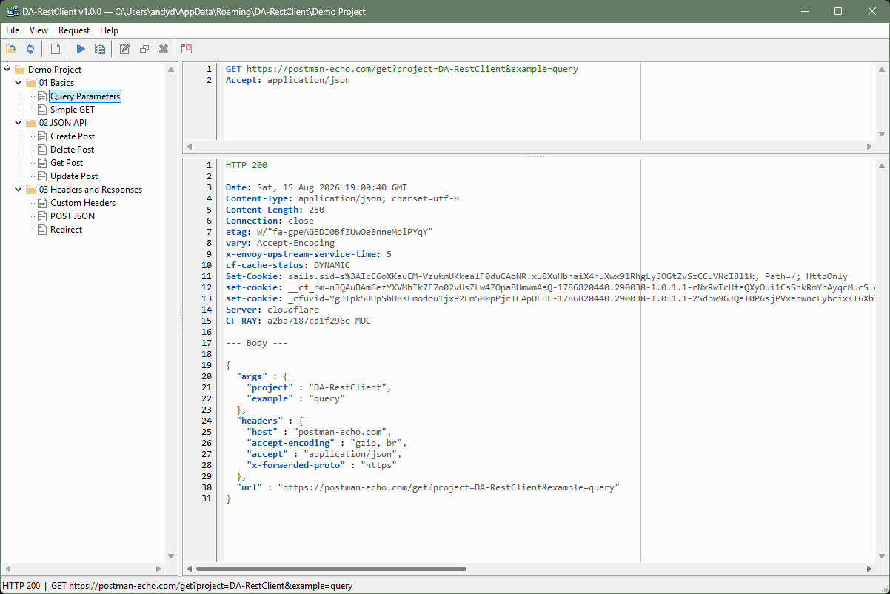
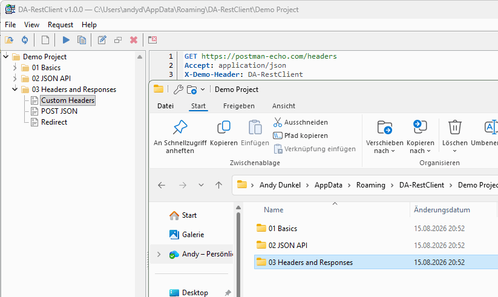

DA-RestClient: A Simple Way to Test REST Endpoints
A quick API check should not always require a large development environment. DA-RestClient is a small desktop application for sending requests to REST endpoints and inspecting their responses without unnecessary complexity.
A request is entered directly as text. The first line contains the HTTP method and URL, followed by optional headers and a request body. Press F5 to send it. The HTTP status, response headers and response body are displayed clearly in the lower editor. Valid JSON responses are formatted automatically.

Plain text files instead of proprietary projects
DA-RestClient stores every request as a regular .rest text file. A project is simply a folder containing files and subfolders. Requests remain transparent and can be read or edited outside the application at any time.
The files can be managed just like source code: copy them, create backups, search their contents or track changes with Git. Complete request collections can also be stored directly alongside the project they belong to.

A request in just a few lines
POST https://example.com/api/items
Content-Type: application/json
Authorization: Bearer TOKEN
{
"name": "Example"
}
DA-RestClient supports GET, POST, PUT, PATCH and DELETE requests as well as custom headers, query parameters and request bodies.
Focused on the essentials
DA-RestClient does not require a large framework, user account or cloud storage. The small native application starts quickly and focuses on the features needed for everyday REST endpoint testing.
It is suitable for developers, testers and administrators as well as anyone who occasionally needs to check an API. DA-RestClient is free to use.
/en/da-restclient-simple-rest-api-testing/